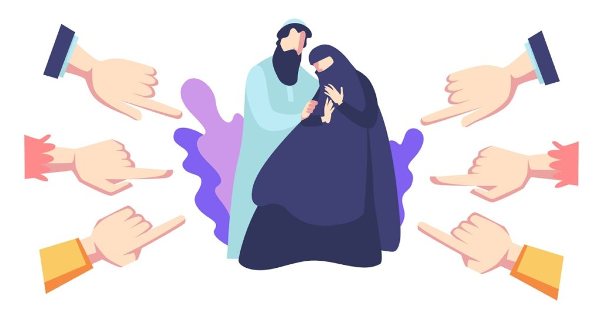

-
Factores históricos y culturales
El racismo y la discriminación han estado presentes en la sociedad colombiana desde la época colonial. Estos prejuicios se han transmitido de generación en generación.
-
Factores económicos
Las personas que pertenecen a grupos poblacionales discriminados suelen tener menos oportunidades económicas, lo que las hace más vulnerables a la exclusión y la estigmatización.
-
Factores institucionales
Las instituciones del Estado, en ocasiones, reproducen la discriminación. Por ejemplo, las leyes y políticas públicas pueden no ser inclusivas y pueden perpetuar las desigualdades.